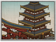

Requires

Enables
- Buildings: 
- Units:


Basic Building Statistics (can be modified by difficulty level, arts, skills, traits and retainers)
- Cost: 4500
- +2 happiness for the Buddhist population
- Spreads Buddhism to neighbouring provinces (+3 religious zeal)
- Converts the populace to Buddhism (+4 religious zeal)
- Enables recruitment of Rank 1 monks
Clan Effects
- Improves the rate at which chi arts are mastered: +10%
- Each Buddhist chain building enables you to sustain one additional monk (to a maximum of 5)
Description
The whole world lies within the garden for one who cares to see it.
The beautiful gardens and tranquil surroundings of a temple complex bring peace and harmony to all who dwell there. No one in the province can fail to be moved by the spirituality of the place. Each building in the complex is carefully constructed to meet the religious needs of its occupants. In turn, this helps to increase the happiness of all Buddhists in the province and allows the recruitment of new units. Temples played an important role in Japan, as many great advances happened within their walls and many great people sheltered in them, away from the dangers and troubles of daily life. Some great men chose temples as their final resting places: the remains of Oda Nobunaga, the unifier of Japan, rest at Daitokuji, in the Murasakino section of Kyoto. A little earlier, this temple had been home to Sen no Rikyu (1522-1591), the man who is credited with the development of the tea ceremony. He built tearooms and gardens within Daitokuji to continue the cultural development of the temple, and encouraged his brothers to devote themselves to mastery of the tea ceremony. It came to embody the key principles of Zen, and became popular with the mighty Shoguns of Japan. A man who could perform the tea ceremony was a formidable individual indeed.